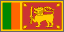
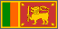
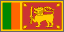
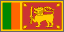

David Bar-Tzur 
David Bar-Tzur 
Flags: World flag database.
Map: Virtual Tourist.
For a quick, interesting resource for facts about this and other countries,
try Mystic Planet - The New Age directory of Planet Earth.
 David Bar-Tzur 
David Bar-Tzur 
Flags: World flag database.
Map: Virtual Tourist.
For a quick, interesting resource for facts about this and other countries,
try Mystic Planet - The New Age directory of Planet Earth.
1. Signs around the world: Countries [Videotape]. Burtonsville, MD: Sign Media.
2. Native sign informant (name lost).
3. http://www.mcs.vuw.ac.nz/~pondy/nzsl/ (NZSL dictionary), which now denies permission.
4. From http://www.youtube.com/watch?v=bSpbD1Pd2wg (4. ASL Introduction Vlog 1), which is no longer extant.